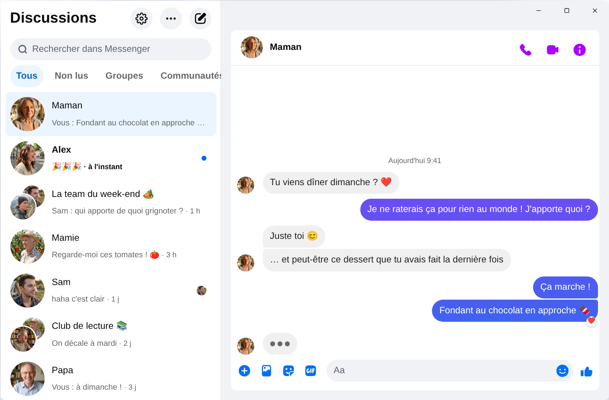

Chatpane / Windows
Mis à jour en novembre 2026
Comment utiliser Messenger sur ton PC en 2026
Meta a fermé l'application Messenger pour Windows le 15 décembre 2025, et messenger.com renvoie désormais vers Facebook. Voici ce qui fonctionne aujourd'hui sur un PC ou un ordinateur portable sous Windows 10 ou 11.
Gratuit et open source · Windows 10 et 11 · Pas une application de Meta
En bref
Il n'existe plus d'application Messenger officielle pour PC. Meta l'a retirée du Microsoft Store et, depuis avril 2026, Messenger sur ordinateur ne fonctionne plus que sur facebook.com/messages, à l'intérieur de Facebook.
Si tu veux Messenger dans sa propre fenêtre, sans le fil d'actualité ni les Reels, Chatpane est une application gratuite et open source pour Windows qui affiche tes discussions, et rien d'autre. C'est un projet indépendant : il n'appartient pas à Meta.
Pourquoi les anciens tutoriels ne marchent plus
Beaucoup de tutoriels conseillent encore de chercher Messenger dans le Microsoft Store, et plusieurs sites de téléchargement proposent toujours l'installateur « Messenger 2250.1 ». C'est justement l'application que Meta a fermée en décembre 2025 : une fois lancée, elle te renvoie simplement vers Facebook. L'installer ne sert à rien.
Ne saisis pas non plus ton mot de passe Facebook dans un programme ou sur une page dont tu ne connais pas l'origine. Si l'on te propose un « Messenger pour PC » avec son propre écran de connexion, méfie-toi.
Qu'est-il arrivé à Messenger pour Windows ?
En 2024, Meta a remplacé l'application Windows par une version web empaquetée. En octobre 2025, elle a annoncé sa fermeture et l'a retirée du Microsoft Store, puis l'application a cessé de fonctionner le 15 décembre 2025. En avril 2026, messenger.com a fermé à son tour. Les dates et les détails sont dans notre article Messenger sur PC ne fonctionne plus.
Tes solutions
Utiliser Messenger sous Windows
Chatpane sous Windows
Chatpane ouvre le même Messenger que celui de ton navigateur : tes discussions, groupes, appels et photos sont là, et restent synchronisés avec ton téléphone. Il retire seulement tout le reste de Facebook.
- Rien que Messenger. Le fil d'actualité, les Reels, Marketplace et la recherche de Facebook sont masqués.
- Des notifications utiles. Réponds, réagis, marque comme lu ou mets en sourdine directement depuis la notification, sans ouvrir la fenêtre.
- Barre des tâches et zone de notification. Le nombre de messages non lus sur l'icône, le lancement au démarrage de Windows et l'option de rester ouvert dans la zone de notification quand tu fermes la fenêtre.
- Confidentialité. Masque le fait que tu écris, masque les noms et les photos de profil quand tu partages ton écran, et bloque les requêtes d'analyse de Facebook (activé par défaut).
- Léger. Moins de 4 Mo à télécharger, pratique si ta connexion est lente ou si tes données sont comptées.
- En français. Chatpane suit la langue de ton ordinateur : ses menus et ses réglages s'affichent en français.

Installer Chatpane
- Télécharge l'installateur pour Windows. Si ton PC a un processeur ARM, prends l'installateur ARM64.
- Lance-le. Les installateurs Windows de Chatpane ne sont pas encore signés numériquement, donc SmartScreen peut afficher « Windows a protégé votre ordinateur ». Clique sur « Informations complémentaires », puis sur « Exécuter quand même ». Ne télécharge Chatpane que depuis chatpane.app ou GitHub.
- Connecte-toi avec ton compte Facebook habituel. Tes discussions s'affichent aussitôt.
Tu ne veux rien installer ? La version portable (.zip) fonctionne sans installateur.
Questions fréquentes
Tes questions sur Messenger pour PC
Chatpane est-il gratuit ?
Oui. Pas de prix, pas d'abonnement, pas de publicité. Chatpane est open source sous licence MIT, et son code est publié sur GitHub pour que chacun puisse le vérifier.
Est-ce l'application officielle de Messenger ?
Non. Chatpane est un projet indépendant, sans lien avec Meta. Il affiche le vrai Messenger de facebook.com/messages dans sa propre fenêtre : tes messages passent donc toujours par Messenger, et les conditions de Meta s'appliquent.
Chatpane fonctionne-t-il sans compte Facebook ?
Non. Depuis avril 2026, Meta ne permet d'utiliser Messenger sans compte Facebook que dans l'application mobile. Sur ordinateur, Chatpane comme toute autre solution a besoin d'un compte qui peut se connecter à facebook.com.
Chatpane fonctionne-t-il sous Windows 10 ?
Oui, sous Windows 10 et 11. Chatpane utilise Microsoft Edge WebView2, déjà inclus dans Windows 11. Sous Windows 10, l'installateur le télécharge s'il manque.
Peut-on passer des appels vidéo ?
Oui. C'est le Messenger complet : les appels audio et vidéo s'ouvrent dans leur propre fenêtre, comme sur facebook.com.
Télécharger Chatpane
Gratuit et open source. Se télécharge en quelques secondes - à peine 4 Mo.
Également : .zip portable · .exe ARM · .zip ARM
Un vieux Mac Intel ? Intel .dmg
La liste complète avec les sommes de contrôle se trouve sur
GitHub
- ou brew install --cask kristofferR/tap/chatpane